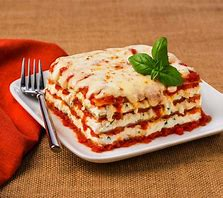

Savor the layers of tender pasta, rich meat sauce, and creamy cheeses in this classic lasagna.
Ingredients:
For the meat sauce:
1 lb ground beef
1 lb Italian sausage
1 onion, finely chopped
4 cloves garlic, minced
2 cans (28 oz each) crushed tomatoes
2 cans (6 oz each) tomato paste
2 cans (15 oz each) tomato sauce
1/2 cup water
2 tbsp sugar
1/4 cup chopped fresh basil
1/4 cup chopped fresh parsley
1 tsp Italian seasoning
Salt and pepper to taste
For the cheese mixture:
16 oz ricotta cheese
1 egg
1/4 cup chopped fresh parsley
1/2 tsp salt
For assembling:
12 lasagna noodles
16 oz shredded mozzarella cheese
1 cup grated Parmesan cheese
Instructions:
Prepare the meat sauce:
In a large pot, cook the ground beef, sausage, and onion over medium heat until browned. Add the garlic and cook for another minute.
Stir in the crushed tomatoes, tomato paste, tomato sauce, and water. Add sugar, basil, parsley, Italian seasoning, salt, and pepper. Simmer for about 1.5 hours, stirring occasionally.
Prepare the cheese mixture:
In a medium bowl, combine ricotta cheese, egg, parsley, and salt. Mix well.
Cook the noodles:
Cook the lasagna noodles according to the package instructions. Drain and rinse with cold water.
Assemble the lasagna:
Preheat your oven to 375°F (190°C).
Spread 1 cup of meat sauce in the bottom of a 9x13 inch baking dish. Place 4 noodles over the sauce. Spread 1/3 of the ricotta mixture over the noodles. Top with 1/3 of the mozzarella cheese and 1/3 cup of Parmesan cheese. Repeat layers twice, ending with a layer of meat sauce and remaining mozzarella and Parmesan cheese.
Bake:
Cover with aluminum foil (to prevent sticking, either spray foil with cooking spray or make sure the foil does not touch the cheese).
Bake in preheated oven for 25 minutes. Remove the foil and bake an additional 25 minutes. Cool for 15 minutes before serving.